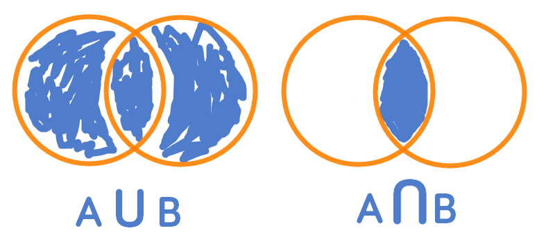

The set operations 'union' and 'intersection' should ring a bell for those who've worked with relational databases and Venn Diagrams. The 'union' of two of sets \(A\) and \(B\) represents a set that comprises all members of \(A\) and \(B\) (or both).
One of the most natural ways to visualize set unions and intersections is using Venn diagrams.

The Venn diagram on the left visualizes a set union while the Venn diagram on the right visually represents a set intersection operation.
Set Unions
The union of two sets \(A\) and \(B\) is denoted as:
The union axiom states for two sets \(A\) and \(B\), there is a set whose members consist entirely of those belonging to sets \(A\) or \(B\), or both. More formally, the union axiom is stated as:
For example, for two sets \(A\) and \(B\):
The union of the two sets is:
We can define a simple function in R that implements the set union operation. There is a function in base R union() that performs the same operation that is recommended for practical uses.
set.union <- function(a, b) {
u <- a
for (i in 1:length(b)) {
if (!(b[i] %in% u)) {
u <- append(u, b[i])
}
}
return(u)
}
Using our function to perform a union operation of the two sets as above.
a <- c(3, 5, 7, 11)
b <- c(3, 5, 13, 17)
set.union(a, b)
## [1] 3 5 7 11 13 17
Set Intersections
The intersection of two sets \(A\) and \(B\) is the set that comprises the elements that are both members of the two sets. Set intersection is denoted as:
Interestingly, there is no axiom of intersection unlike for set union operations. The concept of set intersection arises from a different axiom, the axiom schema of specification, which asserts the existence of a subset of a set given a certain condition. Defining this condition (also known as a sentence) as \(σ\)(\(x\)), the axiom of specification (subset) is stated as:
Put another way; the axiom states that for a set \(A\) and a condition (sentence) \(σ\) of a subset of \(A\), the subset does indeed exist. This axiom leads us to the definition of set intersections without needing to state any additional axioms. Using the subset axiom as a basis, we can define the existence of the set intersection operation. Given two sets \(a\) and \(b\):
Stated plainly, given sets \(a\) and \(b\), there exists a set \(B\) that contains the members existing in both sets.
For example, using the previous sets defined earlier:
The intersection of the two sets is:
We can also define a straightforward function to implement the set intersection operation. Base R also features a function intersect() that performs the set intersection operation.
set.intersection <- function(a, b) {
intersect <- vector()
for (i in 1:length(a)) {
if (a[i] %in% b) {
intersect <- append(intersect, a[i])
}
}
return(intersect)
}
Then using the function to perform set intersection on the two sets to confirm our above results.
a <- c(3, 5, 7, 11, 13, 20, 30)
b <- c(3, 5, 13, 17, 7, 10)
set.intersection(a, b)
## [1] 3 5 7 13
Subsets
The concept of a subset of a set was introduced when we developed the set intersection operation. A set, \(A\), is said to be a subset of \(B\), written as \(A\) ⊂ \(B\) if all the elements of \(A\) are also elements of \(B\). Therefore, all sets are subsets of themselves and the empty set ⌀ is a subset of every set.
We can write a simple function to test whether a set \(a\) is a subset of \(b\).
issubset <- function(a, b) {
for (i in 1:length(a)) {
if (!(a[i] %in% b)) {
return(FALSE)
}
}
return(TRUE)
}
The union of two sets \(a\) and \(b\) has by definition subsets equal to \(a\) and \(b\), making a good test case for our function.
a <- c(3, 5, 7, 11)
b <- c(3, 5, 13, 17)
c <- set.union(a, b)
c
## [1] 3 5 7 11 13 17
print(issubset(a, c))
## [1] TRUE
print(issubset(b, c))
## [1] TRUE
print(issubset(c(3, 5, 7, 4), a))
## [1] FALSE
Summary
This post introduced the common set operations unions and intersections and the axioms asserting those operations, as well as the definition of a subset of a set which arises naturally from the results of unions and intersections.
References
Axiom schema of specification. (2017, May 27). In Wikipedia, The Free Encyclopedia. From https://en.wikipedia.org/w/index.php?title=Axiom_schema_of_specification&oldid=782595557
Axiom of union. (2017, May 27). In Wikipedia, The Free Encyclopedia. From https://en.wikipedia.org/w/index.php?title=Axiom_of_union&oldid=782595523
Enderton, H. (1977). Elements of set theory (1st ed.). New York: Academic Press.